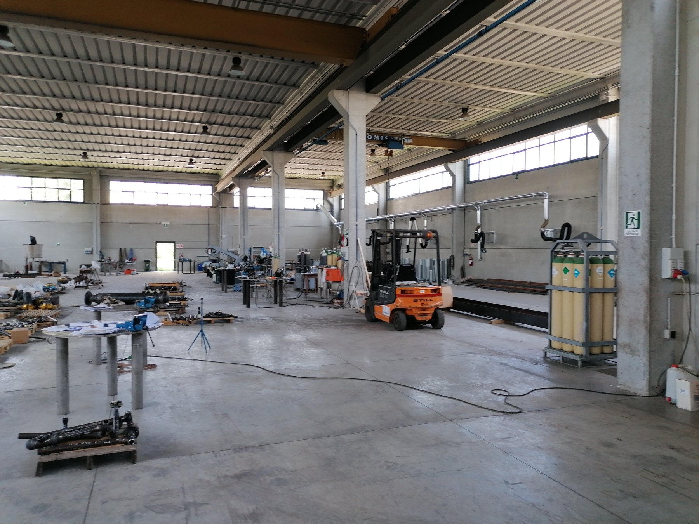
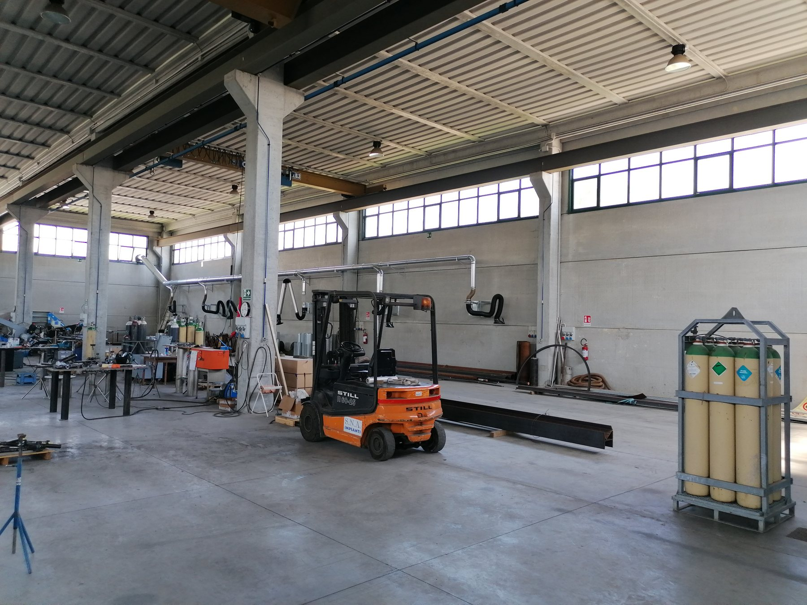
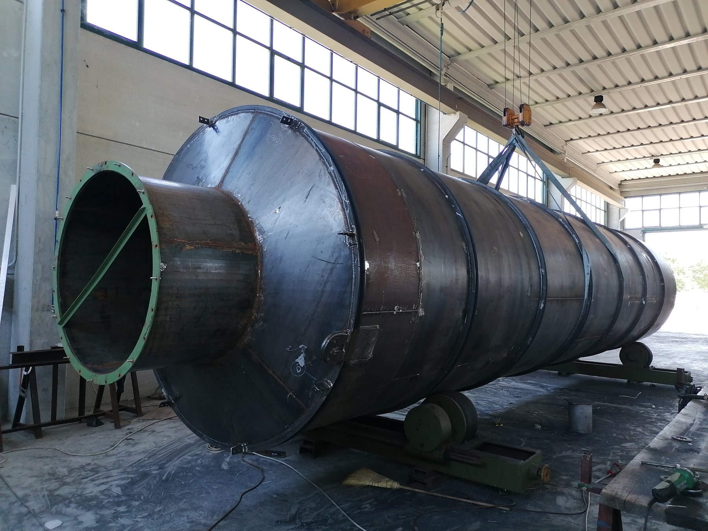

S.N.A. Impianti supporta aziende del settore metalmeccanico con attività di carpenteria, prefabbricazione, montaggio piping, impianti industriali, skid e servizi tecnici orientati a qualità, sicurezza e continuità operativa.
Esperienza operativa, attenzione al cliente e processi controllati guidano le attività di carpenteria industriale, piping industriale, skid e manutenzione impianti industriali.
Realizzazione di carpenteria pesante, media e leggera per impianti industriali, strutture e supporti.
Tubazioni, piping spool, linee di processo, impianti chimici, petrolchimici, gasdotti, metanodotti e oleodotti.
Packagizzazione skid, centraline oil & gas, centraline olio dinamiche e sistemi completi con approccio integrato.
Interventi di manutenzione, miglioramento impianti, incrementi di produzione e ottimizzazione dei siti esistenti.

Per S.N.A. la sicurezza non è un limite: informare e formare sono funzioni fondamentali per la prevenzione degli infortuni e la salvaguardia dell'ambiente. Dal 2017 l'azienda porta avanti una campagna di formazione strutturata sul personale.
I saldatori S.N.A. operano con procedimenti SMAW, FCAW, GTAW e GMAW e con certificazioni rilasciate dai principali enti del settore.
Procedimento versatile con elettrodo rivestito, adatto a molte applicazioni industriali.
Saldatura con filo animato sotto protezione gassosa, utile per alta produttività e lavorazioni strutturali.
Processo TIG con elettrodo infusibile in tungsteno, adatto a lavorazioni di precisione.
Saldatura a filo continuo con elevata efficienza produttiva e continuità di esecuzione.
S.N.A. nasce dall'esperienza trentennale del suo titolare in ambito impiantistico, metalmeccanico e nella carpenteria. Nel tempo è cresciuta fino a diventare una realtà capace di operare in maniera multidisciplinare nella manutenzione e costruzione di impianti industriali.


Scrivici per parlare di carpenteria, piping, skid, serbatoi, impianti antincendio e supporto tecnico in ambito industriale.